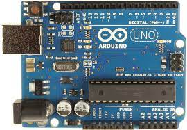
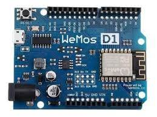

O termo que melhor descreve o Arduino é “plataforma de aprendizado”.
É um dispositivo composto por placa, micro-controlador ATmega328, usado em sistemas autônomos e
soluções simples e conexões de entrada e saída, permitindo que seja conectado a computadores,
displays e outras interfaces.
Com o intuito de ser simples, fácil e barato, o arduíno foi desenvolvido com o conceito de hardware livre,
isso quer dizer que qualquer pessoa pode usar e programar um projeto no arduíno. Existe uma possibilidade
infinita de projetos que podem ser criado usando o arduíno, visto que ele aceita uma grande quantidade de
periféricos e sensores como por exemplo: LDR, sensor ultrasônico, módulo relé e muitos outros dispositivos.
A programação do arduíno é feita através de uma IDE, onde nela é escrito o código em linguagem de programação
C++. A conexão dos dispositivos é feita nas portas de entradas e saídas, sendo elas do tipo digital, analógicas
e PWM. A quantidade de portas disponíveis variam de acordo com o tipo de arduíno, alguns exemplos são:
uno, nano, mini, leonardo, mega, entre vários outros.